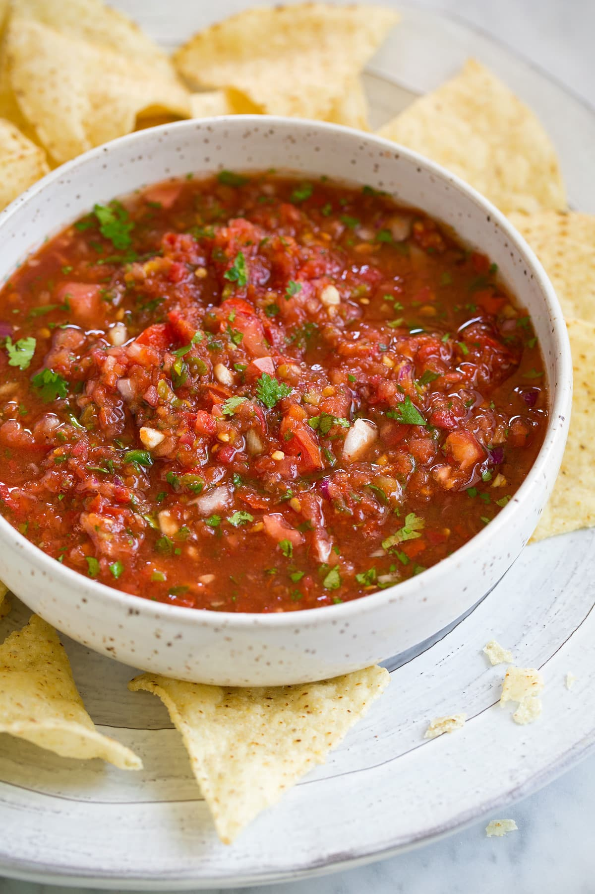

Salsa

About This Salsa
This is a Tex-Mex salsa, which is blended into a puree and used more as a condiment.
Many elements of this salsa may be adjusted to your taste.
Ingredients
- 1 Red Bell Pepper
- 2 Jalapenos
- 1 10 oz Can Fire Roasted Tomatoes
- 4 Cloves Garlic
- 1/2 Bunch of Cilantro
- Salt to Taste
Steps
- Peel the garlic, slice the peppers in half and de-seed the bell pepper and one of the jalapenos
- Roast the bell pepper, both jalapenos, and two of the cloves of garlic on a foil lined sheet at 350 f for 15 minutes
- Once roasted, broil until charred to your taste
- Once cool enough to work with, blend roasted vegetables with all remaining ingredients and add salt to taste
- Chill for 6+ hours for optimal flavor development